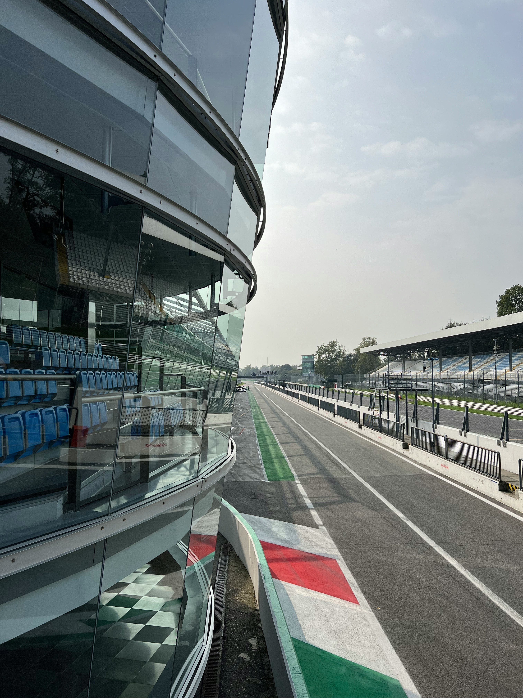
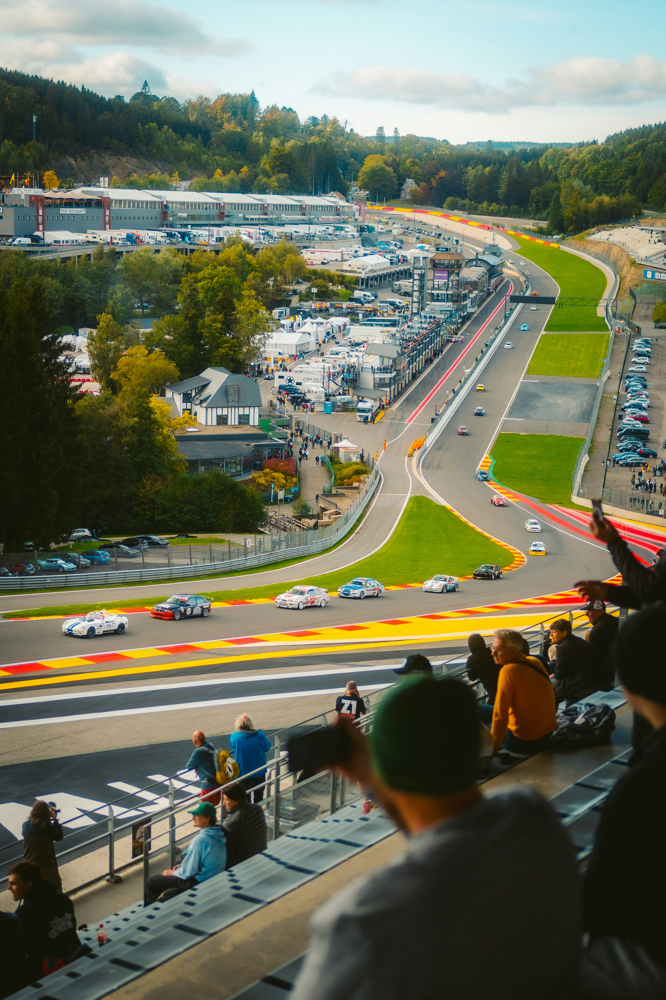
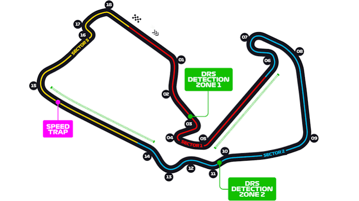
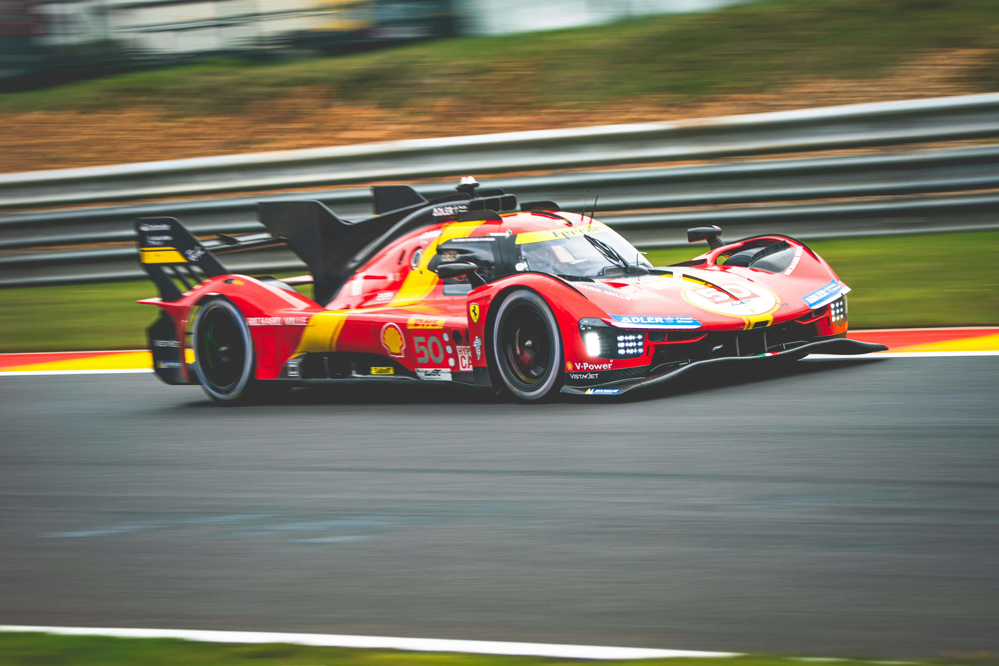
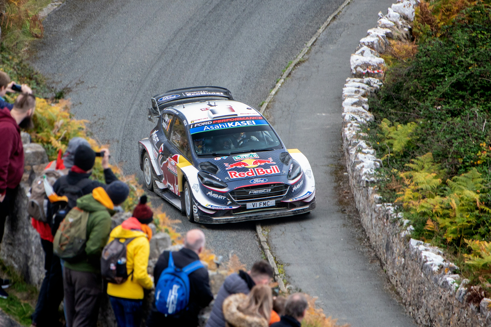

F1
🏎 Королівські перегони
Formula 1
Вершина автоспорту. Найшвидші боліди планети та найкращі пілоти світу борються за титул чемпіона світу.
Вершина автоспорту. Найшвидші боліди планети та найкращі пілоти світу борються за титул чемпіона світу.
Формула 1 — це вершина світового автоспорту, де інженерна досконалість зустрічається з людською майстерністю на межі можливого. Боліди розганяються до 350+ км/год, а перевантаження у поворотах сягають 5G.
Кожен сезон складається з десятків Гран-прі на легендарних трасах — від вузьких вулиць Монако до швидкісного Монци. Команди витрачають сотні мільйонів доларів на розробку, а секунди вирішують долю чемпіонату.
Чемпіонат світу Формули 1 стартував у 1950 році з Гран-прі Великої Британії на Сільверстоуні та відтоді є вершиною кільцевих перегонів на відкритих колесах. За понад сім десятиліть серія пройшла шлях від фронт-двигунних боліди 1950-х до сучасних гібридних машин з активною аеродинамікою.
Епохи чемпіонату часто пов'язують з домінуючими командами та пілотами: Ferrari у 1950-х і 2000-х з Шумахером, McLaren і Williams у 1980–90-х, Red Bull у 2010-х і на початку 2020-х з Феттелем та Ферстаппеном. Кожна зміна технічного регламенту — turbo-ера 1980-х, аеродинамічна революція, гібридні силові установки з 2014 року — переписувала баланс сил.
2026 рік приносить одну з найбільших регламентних революцій в історії серії: нове покоління силових установок з більшою часткою електричної потужності та активна аеродинаміка, що дозволяє боліду змінювати профіль крил просто на трасі.
Стандартний гоночний вікенд складається з вільних заїздів, кваліфікації у форматі трьох сесій на виліт (Q1, Q2, Q3) та недільної гонки. На окремих етапах календаря проводиться спринтерський формат — коротка суботня гонка, що визначає частину стартового поля на неділю та приносить окремі очки.
Очки нараховуються першим десяти пілотам за схемою 25-18-15-12-10-8-6-4-2-1, а за найшвидше коло гонки в топ-10 додається один додатковий бал. Чемпіонат складається з паралельного заліку пілотів та заліку конструкторів, де підсумовуються очки обох пілотів команди.
Сучасний болід Ф1 — це вуглепластиковий монокок із гібридною силовою установкою потужністю понад 1000 к.с., що поєднує 1.6-літровий турбований V6 з електричними двигунами MGU-K та MGU-H. З 2022 року регламент повернув аеродинаміку «граунд-ефекту» — потік повітря під днищем боліда — щоб полегшити боротьбу колесо в колесо.
Регламент 2026 року вводить менші, легші боліди з новою філософією силової установки (більша частка електричної потужності відносно двигуна внутрішнього згоряння) та активні аеродинамічні елементи, що автоматично змінюють положення на прямих і в поворотах.
Чемпіоном світу 2025 року серед пілотів став Ландо Норріс (McLaren) — перший титул у кар'єрі, здобутий у драматичній боротьбі з Максом Ферстаппеном, що завершилася лише на фінальному етапі в Абу-Дабі. McLaren водночас виграв Кубок конструкторів, повернувши собі це звання вперше з ери Хемілтона 2008 року.
Сезон 2026 стартував у березні Гран-прі Австралії та проходить за новим технічним регламентом із суттєво оновленими силовими установками й активною аеродинамікою — Норріс розпочав рік як чинний чемпіон світу.
Загибель Айртона Сенни на Гран-прі Сан-Марино змінила підхід до безпеки в автоспорті назавжди.
Льюїс Хемілтон здобув свій перший титул в останньому повороті останнього кола сезону в Бразилії.
Суперечливий фінал сезону приніс Максу Ферстаппену перший титул за секунди до фінішу.
Ландо Норріс здобув свій перший чемпіонський титул, перервавши серію Ферстаппена й принісши McLaren перший титул пілотів з часів Хемілтона у 2008 році.
Натисніть «Детальніше», щоб прочитати повну біографію, статистику та кар'єрні досягнення.
Найстаріша та найтитулованіша команда у Формулі 1, символ пристрасті італійського автоспорту.
Легендарна британська команда з довгою історією технологічних інновацій та тріумфів.
Заводська команда Mercedes, що домінувала в еру гібридних турбо-двигунів Формули 1.
Команда, що поєднала енергійний бренд та найкращих інженерів для серії чемпіонських титулів.




Дані підтягуються прямо з публічного F1 API у момент відкриття сторінки — жодних застарілих цифр.
Завантаження турнірної таблиці…

Перегони майбутнього. Повністю електричні боліди змагаються на вулицях найбільших міст світу.
Перейти на сторінку →
Чемпіонат світу з перегонів на витривалість. Головна подія — легендарні «24 години Ле-Мана».
Перейти на сторінку →
Чемпіонат світу з ралі. Боротьба зі стихією на ґрунті, снігу, асфальті та гравії у будь-яку погоду.
Перейти на сторінку →Перегляньте повну галерею, історію автоспорту та профілі легендарних команд і пілотів.
Під час підготовки цієї сторінки використано перевірені офіційні та довідкові джерела.